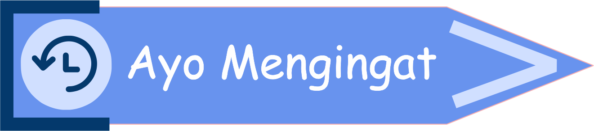

1.3 MENYATAKAN SUATU HIMPUNAN
 Prasyarat (klik saya)
Prasyarat (klik saya)- Siswa sudah mampu menyatakan notasi dari suatu himpunan.
- Siswa sudah mampu menyebutkan anggota dari suatu himpunan.
 Tujuan Pembelajaran (klik saya)
Tujuan Pembelajaran (klik saya)
Setelah mempelajari topik ini, diharapkan siswa mampu menyatakan himpunan dengan metode deskripsi, metode bersyarat, dan metode tabulasi.

Perlu diingat kembali bahwa :
- Suatu himpunan dinotasikan dengan huruf kapital (seperti A, B, C, ..., atau Z), dan
- Elemen/anggota dari suatu himpunan dituliskan di dalam tanda kurung kurawal {....}
Lalu, bagaimana cara menyatakan suatu himpunan? Terdapat 3 cara dalam menyatakan suatu himpunan, yaitu metode deskripsi, metode bersyarat, dan metode tabulasi.
*tekan salah satu metode di bawah ini untuk melihat penjelasan.

Metode Deskripsi
Metode deskripsi adalah metode menyatakan himpunan dengan kata-kata dan menuliskan syarat keanggotaan himpunan di dalam tanda kurung kurawal. Struktur penulisannya :
Metode Bersyarat
Metode bersyarat adalah metode menyatakan himpunan dengan notasi pembentuk himpunan dan dinyatakan dengan variabel yang diikuti garis tegak serta syarat keanggotaannya. Variabel yang dimaksud adalah sebuah huruf yang mewakilkan anggota himpunan. Struktur penulisannya :
Metode Tabulasi
Metode tabulasi adalah metode menyatakan himpunan dengan menyebutkan anggota-anggotanya dan menuliskannya di dalam tanda kurung kurawal yang dipisahkan oleh tanda koma (,). Metode ini adalah metode yang paling umum digunakan karena termasuk metode yang paling mudah karena cukup menyebutkan anggota himpunannya terdiri dari apa saja. Struktur penulisannya :

*catatlah ke dalam buku catatanmu 😄
-
Himpunan bilangan asli
A = {1, 2, 3, 4, ...} -
Himpunan bilangan cacah
C = {0, 1, 2, 3, 4, ...} -
Himpunan bilangan bulat
B = {..., -3, -2, -1, 0, 1, 2, 3, ...} -
Himpunan bilangan genap
Himpunan bilangan asli yang habis dibagi 2
G = {2, 4, 6, 8, ...} -
Himpunan bilangan ganjil
Himpunan bilangan asli yang apabila dibagi 2 selalu sisa 1
L = {1, 3, 5, 7, ...} -
Himpunan bilangan prima
Himpunan bilangan cacah yang mempunyai dua faktor, yaitu 1 dan bilangan itu sendiri
P = {2, 3, 5, 7, ...} -
Himpunan bilangan komposit (tersusun)
Himpunan bilangan asli yang mempunyai lebih dari dua faktor
T = {4, 6, 8, 9, 10, 12, 14, ...}